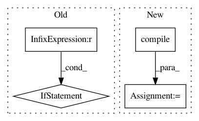

16176a2d3e934528c1b6a4c80d0fc53c86ec5933,scripts/cpp_lint.py,,,#,4762
Before Change
sys.exit(_cpplint_state.error_count > 0)
if __name__ == "__main__":
main()
After Change
"Add //include " + required_header_unstripped + " for " + template)
_RE_PATTERN_EXPLICIT_MAKEPAIR = re.compile(r"\bmake_pair\s*<")
def CheckMakePairUsesDeduction(filename, clean_lines, linenum, error):
Check that make_pair"s template arguments are deduced.
In pattern: SUPERPATTERN
Frequency: 4
Non-data size: 4
Instances
Project Name: BVLC/caffe
Commit Name: 16176a2d3e934528c1b6a4c80d0fc53c86ec5933
Time: 2014-04-22
Author: jeff.donahue@gmail.com
File Name: scripts/cpp_lint.py
Class Name:
Method Name:
Project Name: craffel/mir_eval
Commit Name: c73bc6a1773ae39c0c79d8e7fc7b53124a9bfa1e
Time: 2014-01-24
Author: brm2132@columbia.edu
File Name: mir_eval/io.py
Class Name:
Method Name: load_events
Project Name: BVLC/caffe
Commit Name: 9572a68b8832a09f716017742fbd3b4f1da3d131
Time: 2014-08-12
Author: jeff.donahue@gmail.com
File Name: scripts/cpp_lint.py
Class Name:
Method Name:
Project Name: craffel/mir_eval
Commit Name: c73bc6a1773ae39c0c79d8e7fc7b53124a9bfa1e
Time: 2014-01-24
Author: brm2132@columbia.edu
File Name: mir_eval/io.py
Class Name:
Method Name: load_annotation